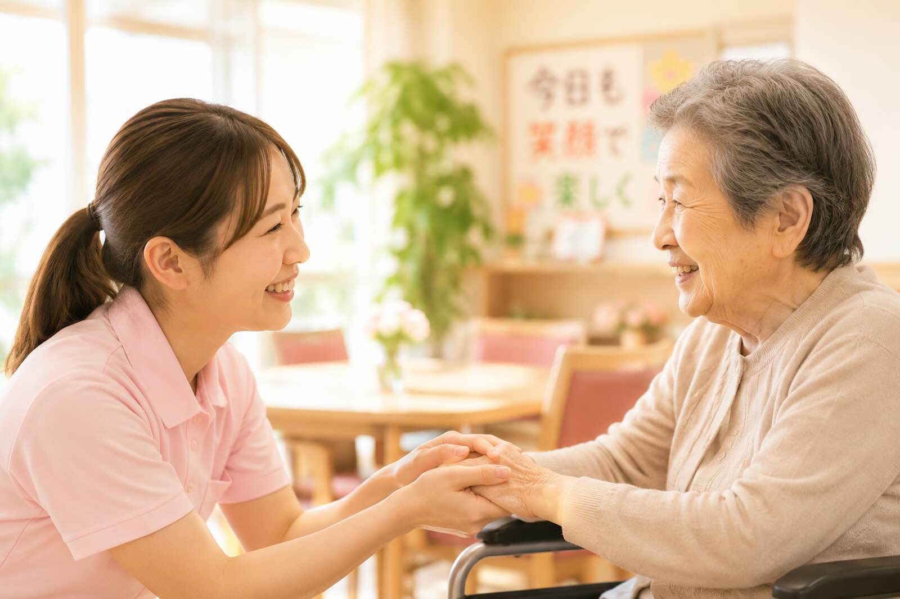
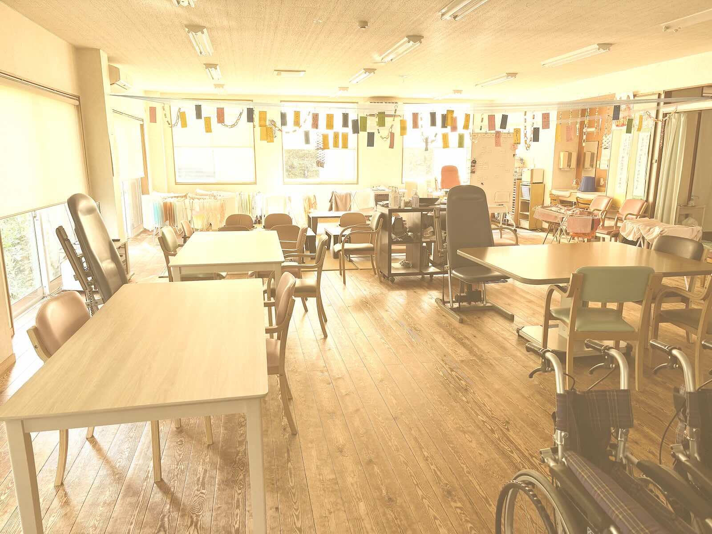
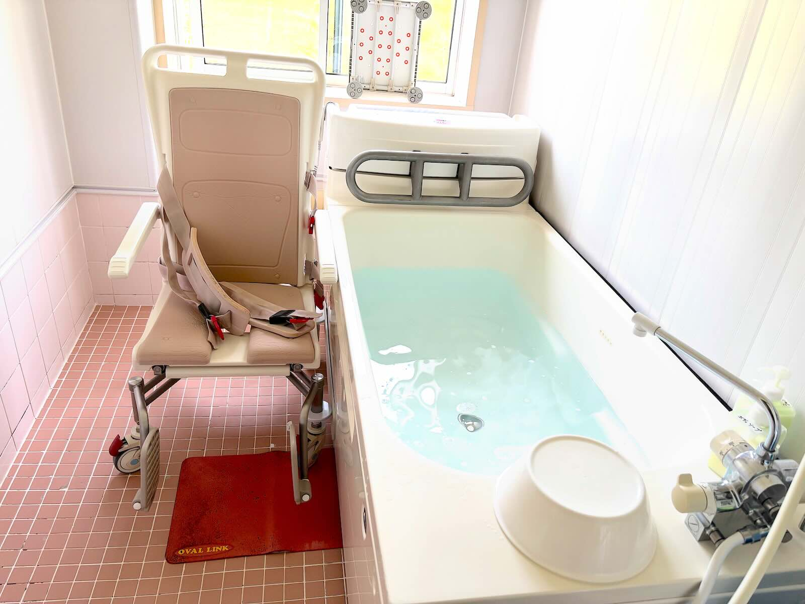
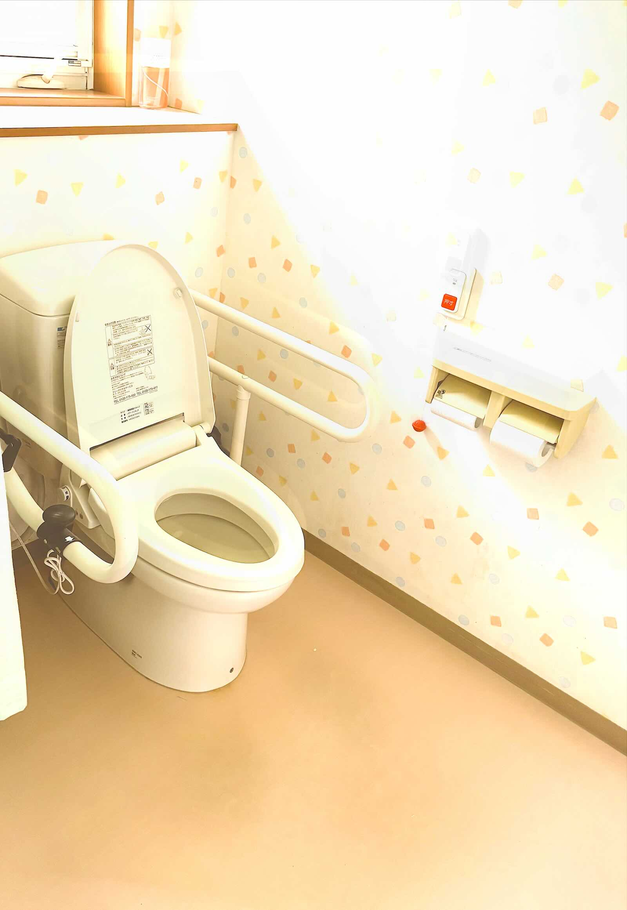
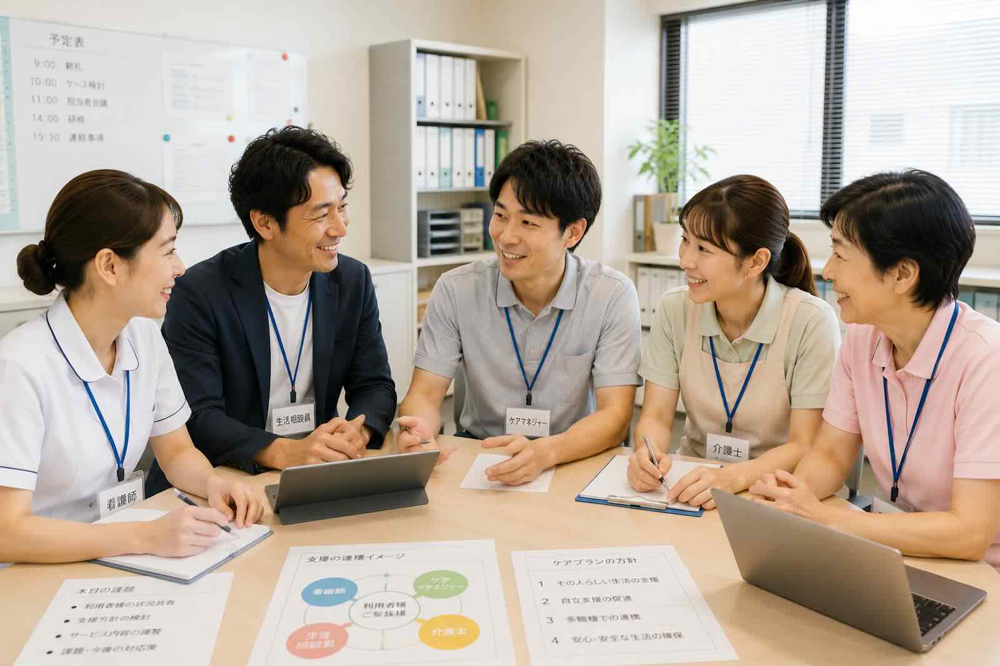

ケアセンターソレイユあざぶ
ケアセンターソレイユあざぶ
ご利用者様とご家族様に寄り添うデイサービス
ご利用者様とご家族様に寄り添うデイサービス

ご利用者様もご家族様も安心できる施設を目指しています。
笑顔あふれる毎日を大切にします。
ご利用者様とご家族様の気持ちを大切にします。
地域に根ざした温かい施設を目指します。

ソレイユあざぶの中心となる広々とした空間です。 食事や機能訓練、レクリエーションなど、 一日のさまざまな活動をこのホールで行っています。 畳の席もございます。
デイルーム・食堂・機能訓練スペースが一つになった開放的な空間で、 ご利用者様同士の交流が自然に生まれ、 スタッフも常に見守りやすい環境となっています。
明るい日差しが差し込む温かなホールで、 皆様が安心して笑顔で一日を過ごしていただけるよう努めています。

お身体の状態や体力に合わせて、 一般浴とチェアー浴をご利用いただけます。 安全に配慮しながら、安心して入浴できる環境を整えています。

手すりを備えた広いトイレで、 車いすをご利用の方も安心してお使いいただけます。

ケアセンターソレイユあざぶでは、 看護師・生活相談員・介護士が皆様の担当ケアマネージャーと 日々情報を共有しながら、ご利用者様一人ひとりに合わせた 支援を行っています。
施設見学・ご相談は随時受付しております。 お電話またはフォームより お気軽にお問い合わせください🌸
見学を申し込むTEL：0256-39-6711
受付時間：8:15〜17:15
お問い合わせはこちら